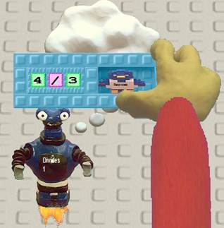
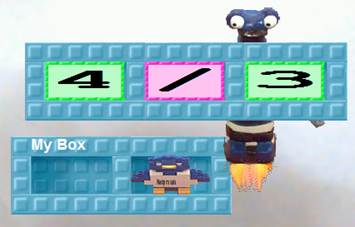
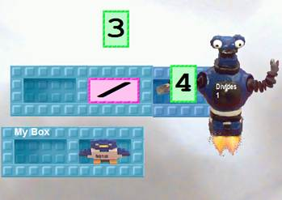
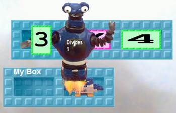
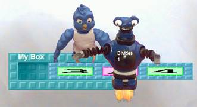
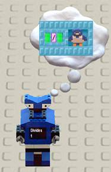

Train
a robot named Divides 1 that takes a number
and gives a bird 1 divided by that number. The pictorial instructions are at
the end if you need help.
Use
the robots from Activity 4 to make all the proper fractions. Run Divides 1 with the nest with all
the fractions.
Connect
Match Maker with the result. Think
about what the robots are producing.
Sally says that something is fishy here. She
says:
“There must be the same number of rational numbers from 0
to 1 as there are from 1 to 2. And from 2 to 3. And 3 to 4. So there are an
infinite number of intervals of the same size as 0 to 1. So there must
be an infinite times more rational numbers greater than 1 than between 0 and
1.”
Do you agree or disagree with Sally? Why?
Activity 5, Task B:
Training Divides 1
|

|

|
|

|

|
|

|

|